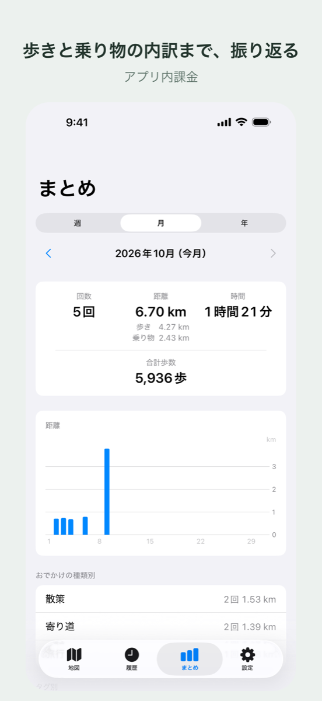
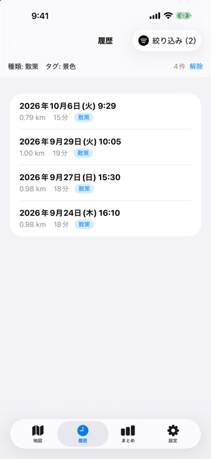
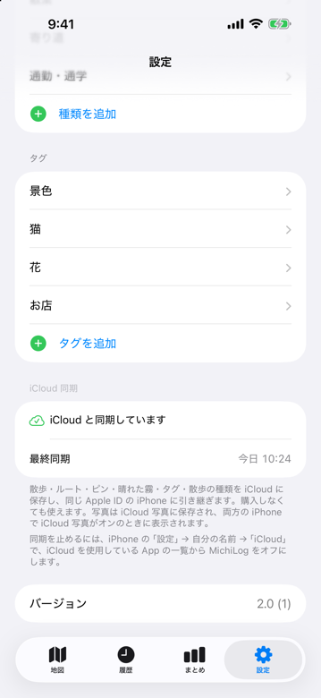

MichiLog
MichiLog

地図は最初、すべて霧の中
歩いた道の周りだけ霧が晴れ、晴れた範囲はこれまでの散歩の積み重ねとして広がっていきます。霧は薄く透けていて、下の道路や地名がうっすら見えます。まだ歩いていない道が、どこにあるかは分かります。
まだ歩いていない道
霧の下に、うっすら見えている
歩いた道
周りの霧が晴れて、地図に残っていく
散歩中も、歩くそばから晴れていく
開始ボタンを押して歩き、終了ボタンを押すだけ。散歩のルート・距離・時間が記録され、今日歩いた距離と時間は地図の画面でいつでも見られます。
画面を閉じても、iPhone をロックしても記録は続きます。
電車や車など、歩く速さを超える移動が続いた区間は、ルート・距離・霧に入りません。


見つけたものを、その場所に残す
散歩中は、現在地にピンを打って写真とメモを残せます。写真もメモも任意なので、気になった場所にさっと印だけ付けることもできます。
写真は、その場でカメラで撮るか、iPhoneの写真ライブラリから選んで付けられます。打ったピンは、あとから写真・メモ・タグを変えたり、写真を外したり、ピンごと削除したりできます（ピンの場所と時刻は変わりません）。
撮った写真は iPhone の写真アプリ（カメラロール）に保存され、アプリが持つのは写真への参照だけです。
写真アプリで消した写真は、MichiLog でも表示されなくなります。
あの日の道を、もう一度
過去の散歩は一覧から選んで、ルートとピンを見返せます。
散歩を終えたら「散策」「通勤・通学」のような散歩の種類を選べます。種類も自分で追加できます。
不要な散歩は削除でき、削除すると霧も残った散歩から作り直されます。

歩いた記録が、積み上がる
記録できる件数に上限はありません。

履歴
散歩が新しい順に並びます。日付と開始時刻、距離と時間が1行に出ます。

まとめ
買い切りで使える週・月・年ごとの散歩の回数・距離・時間をグラフで。散歩の種類別の内訳と、タグ別のピンの数も出ます。

絞り込み
買い切りで使える履歴を散歩の種類とタグで絞り込めます。タグを複数選ぶと、どれかが付いた散歩が並びます。

機種変更しても、引き継げる
記録は iCloud で同じ Apple Account の iPhone どうしに自動で同期されます。購入しなくても使えます。アプリの中での操作は要りません。
写真そのものは iCloud に送りません。別の iPhone で写真が見えるのは、iCloud 写真がオンのときです。
料金
定期的な支払いはありません。
無料
¥0記録・霧・ピン・履歴・iCloud での引き継ぎは、ずっと無料です。
購入していない間は、履歴・まとめ・設定の画面と、散歩を終えたあとに広告が出ます。地図の画面には出ません。
アプリ内課金
買い切り¥480- 広告が消える
- まとめ
- 履歴の絞り込み
- 6個目以降のタグと散歩の種類
位置情報とプライバシー
位置情報は「使用中のみ許可」で使います。「常に許可」は求めません
記録したデータは iPhone とご自身の iCloud に保存され、開発者が受け取ることはありません
広告の表示のために、広告配信事業者（Google）が端末の識別子などを使います。トラッキングの許可は任意です
アカウント登録は不要です
散歩の記録中にバックグラウンドで位置情報を使い続けると、バッテリーの消費が増える場合があります。歩行中は画面を見続けず、周囲の安全に気をつけてお使いください。
対応環境：iOS 17.0 以上の iPhone